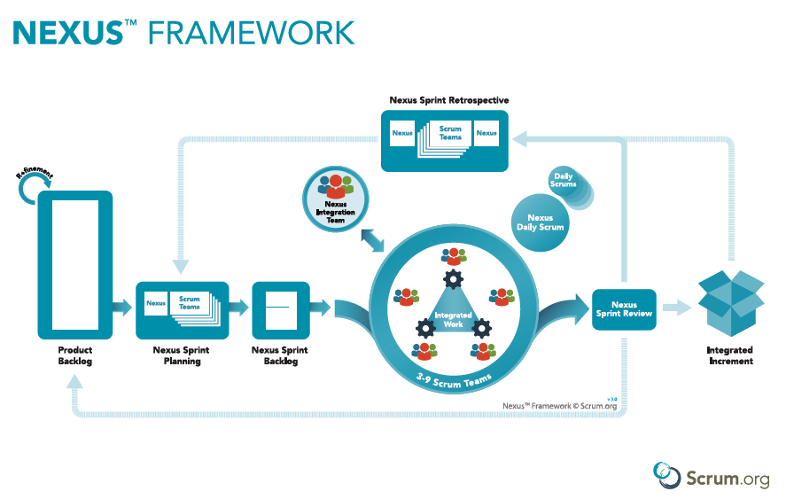

Surviving a 7-Scrum-Team Project
A Nexus Case Study

I was a Director of Delivery at an outsourcing firm when we got an opportunity to work with this client, let’s call them Company H. They would like to build a new generation restaurant management system as a software-as-a-service platform. My role was both Account Manager and Program Manager for this client, I gave the team’s overall direction, resolved cross-team impediments, reported the overall status and risks to the PMO and Steering Committee.
The project started with 2 Scrum Teams then eventually grew to 7 Scrum Teams working on a single product backlog.
Just like other programs with multiple Scrum teams working on the same product backlog, we experienced the great challenge of dependency and integration hell, on top of that, we had 14-hour timezone difference between the team’s and their PO’s location, not to mention the challenges of outsourcing nature (tightly bound by contractual terms and sometimes lack of trust). In order to make our life easier, I chose to apply Nexus framework with adaptations to ensure multiple team’s works resulted in an integrated product. The model was not perfect but it was the best we could do at the time considering our constraints.

Each of our Scrum Team was composed of 1 Product Owner, 1 Scrum Master, 6 developers and 4 testers. Our Nexus Integration Team included an Onsite Coordinator (proxy of the PO), Nexus Scrum Master (rotating role), 3 Scrum Masters (each serving 2 Scrum Teams), 2 members from each Development Team, 1 Technical Architect, 1 Test Architect. At the program level, we had Steering Committee including both companies' executives, Technical Governance and PMO to maintain transparency in communication and decision making.
Each sprint was 2-week duration, we applied Sprint Planning, Daily Scrum for each Scrum team and Nexus Sprint Planning, Nexus Backlog Refinement, Nexus Daily Scrum, Nexus Sprint Review, Nexus Sprint Review at Nexus level.
We conducted Nexus Backlog Refinement meeting once every week, in which we had representatives from all Development teams and the PO to review the priority product backlog items and dependencies among them. The PO made initial team assignment for the reviewed product backlog items based on the teams' discussion and dependencies. We utilized Google Spreadsheet retrieving data directly from JIRA API to make the planning easier, we could have used JIRA Portfolio, but it was more costly.
In the Nexus Sprint Planning meeting, the Development teams sized the backlog items assigned to them, reviewed the plan in comparison to their availability for the new sprint, discuss with other teams and the PO on their plan before finalizing. There was one important outcome missing: we did not define the Nexus Sprint Goal as we did not see how important it was back then.
We had Nexus Daily Scrum with representatives from all Development teams to discuss on integration issues, the meetings were very helpful to early identify and address integration challenges, but they were also a pain given a lot of people involved, we tried different approaches to simplify and make these meetings more efficient, eventually we reached to a point when it took less than 1 hour but were not able to reduce it further .
The team applied Gitflow with feature branch workflow, when a feature was completed (developed and tested), it would be merged into the dev branch and built automatically to a test environment for the PO to early review and feedback. We had some automated end-end regression test suites to validate integrated workflows and 60-80% unit test (branch) coverage for all code, which helped to save some testing time, but given the early stage of the product with ever-changing features and tight deadline, the majority of the testing was done manually including scripted tests and exploratory tests.
We had weekly PMO meetings to report the progress which was visualized using Sprint burn-down chart and Release burn-down chart. Risks were also raised and monitored in those meetings.
The Nexus Sprint Review was hosted by the PO, the teams demonstrated what was done, received feedback from the stakeholders, which would be added to the backlog for next sprints. The meeting was recorded and shared across the organization so that everyone was aware of the progress.
The Teams conducted Nexus Sprint Retrospective together, then Sprint Retro for each team, feedback/action items were shared among the teams and PO. We applied various practices as Lean Coffee or simple brainstorming technique on Start/Stop/Continue, sometimes the SMs got creative and asked the teams to do sentimental drawings or arranged team outing to create a comfortable environment to share their ideas.
Overall, the processes we applied were helpful, we demonstrated well our capability in a fast-pace project and won much more business with the client, our team size grew from 20-ish engineers to more than 100 engineers at some point, but that was not without challenges, I will write more about our lesson learn, especially in release management in the upcoming posts.